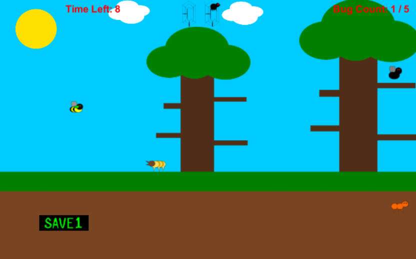

My Video Game Projects
Ski Royale
This game was a part of my senior capstone made in a four man team (three programmers including myself and one artist). Have fun in 1 to 4 player splitscreen party style racing combat! Use items and hit people with your ski poles to get an advantage and win the race. For this project I programmed the player movement, controls, game modes, splitscreen multiplayer, track obstacles and menus. I also designed and built the tutorials and the racetracks. Through playtesting I was able to make the player's controls and movement feel natural and fun yet requires some skill. I was also able to iterate the designs of the racetracks to be fair, interesting, varied and work well within the controls and constraints of the player's movement. Made in Unity and programmed in C#. (This game requires XBOX controllers for Windows)
Download Ski Royale for Windows
Check out the project and code on GitHub here
Parasitic Passage
This game was made for my Game Programming class. I designed, programmed and made all of the art assets for it. The goal of the game is to infect all of the bugs in the level with a parasite before the time runs out. When you infect a bug you take control of it and use it's unique abilities to infect the other bugs and solve the puzzle. Through playtesting I was able to find out the right way to go about teaching the player the mechanics of the game in a process that is not wordy. I also was able to balance the level progression to make sure the difficulty and the complexity of the puzzles increases at a reasonable rate. Made in Unity and programmed in C#. Art made in Inkscape and sounds from freesound.org.
Play Parasitic Passage in your browser here! (Google Chrome strongly suggested)
Check out the project and code on GitHub here
Pollution Problems
I made this game as a statement on the amount of garbage that humans have dumped into the oceans. I designed, programmed and made all of the art for this game. I tried to use what Ian Bogost calls "procedural rhetoric", which is using the mechanics of the gameplay to persuasively make a point. The player is presented with a portion of ocean filled with trash and must pick up as much of it as they can before the time runs out. Then in the next scene the player controls a turtle and must avoid eating trash until the time runs out. The amount of trash they have to avoid is based on how much they pick up in the first scene. These scenes loop and increase in difficulty until the turtle dies in the runner scene. Through playtesting and critique I decided to change the game from an endless runner scene to the two scenes that loop and increase in difficulty to give the game more direction, purpose and replayability. Made in Unity and programmed in C#. Art made in Inkscape and sounds from freesound.org.
Play Pollution Problems in your browser here! (Google Chrome strongly suggested)
Check out the project and code on GitHub here